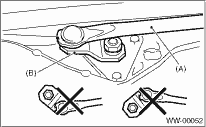

1. Install the wiper link to the vehicle, then connect the motor connector.
2. Connect the battery ground cable to the battery.
3. To confirm that the motor is at the auto stop position, connect the harness to the motor and turn the wiper switch to ON/OFF once.
4. Disconnect the ground cable from the battery.
5. Tighten the nut where rod (A) and link plate (B) is aligned in a straight line.

6. Install in the reverse order of removal.
Tightening torque:
Refer to “COMPONENT” of “General Description”.